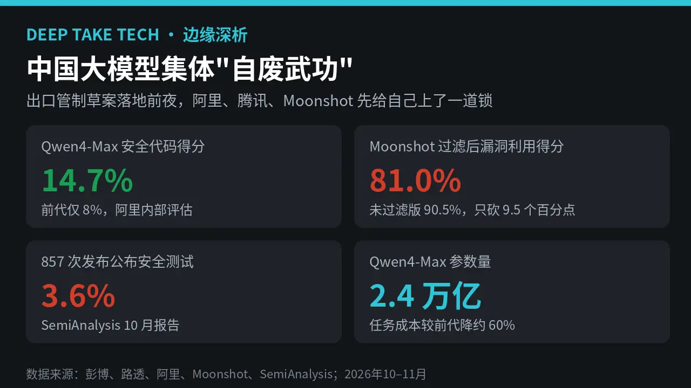

边缘深析 · EDGE INSIGHT
中国大模型集体"自废武功"：先砍掉黑客能力，再谈出海
阿里、腾讯、Moonshot的新模型集体下调进攻性网络能力，背后是10月出台的出口管制草案；"安全"正在成为模型出海的许可证。
DEEP TAKE · 本篇判断真正的新东西不是"中国模型变安全了"，而是"安全"正在成为中美科技竞争的新关税——拿不到安全背书的模型，出不了海。
Qwen4-Max 安全代码生成得分 14.7%（前代 8%）
Moonshot 过滤后模型 xdev-bench-hard 81.0%（未过滤版 90.5%）
SemiAnalysis：857 次中国模型发布中仅 3.6% 公布安全测试结果
阿里 Qwen4-Max 2.4 万亿参数 · 任务成本较前代降约 60%（阿里官方口径）
